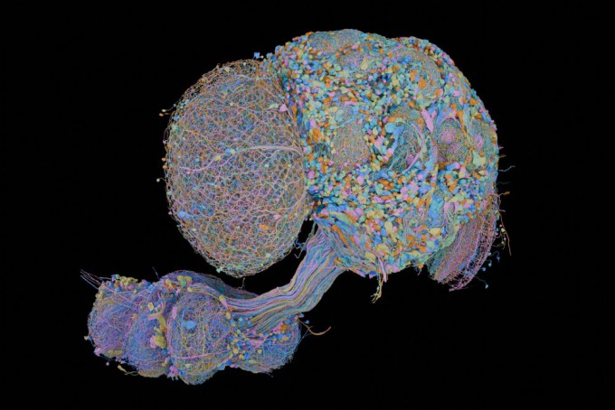
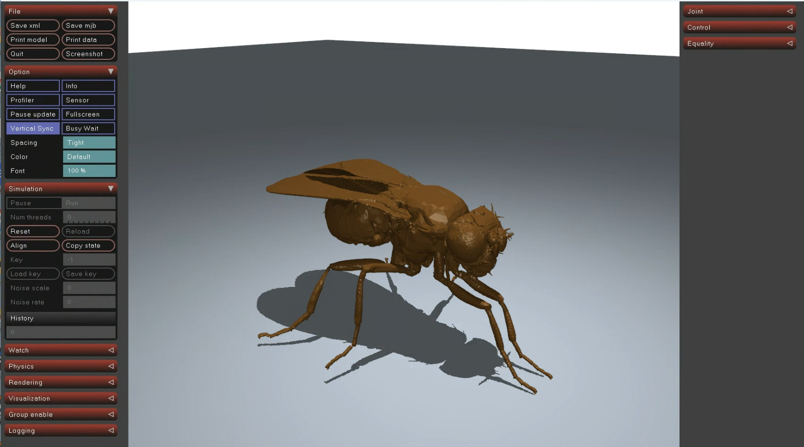

개발_260928-261014
선행 연구 및 배경 (FLYnn)
- 생물학적 신경망 기반 로보틱스:
- 초파리의 중추신경계(CNS) 및 뇌 구조(예: MANC, 혜성 신경망 데이터)를 인공 신경망(RNN 등)으로 변환하여 저전력 에이전트에 이식하려는 시도들이 진행 중임.
- 기존 비전 모델(VLM/VLA)과의 차별점:
- 기존 비전-언어-행동 모델들은 연산량과 토큰 소비가 너무 커 라즈베리 파이 같은 소형 기기 구동이 불가능함.
- 생물학적 신경 회로의 경로 압축 및 경량화를 통해 초저전력·실시간 제어가 가능한 대체재를 모색하는 선행 접근법을 바탕으로 함.
핵심 연구 목표 및 전제 조건
연구 목표
"거대한 AI 모델(VLM/VLA) 대신, 초파리 신경망 구조를 이식해 연산량과 토큰 소비를 대폭 줄인 경량 로봇 제어 시스템을 구현한다."
전제 조건 및 개발 환경
- 최종 하드웨어 목표: 라즈베리 파이 4 (Raspberry Pi 4) 구동
- 현재 개발 환경: 데스크탑 환경에서 시뮬레이션 및 모델 검증 진행 중
- 효율성 검증: 일반적인 VLM/VLA 대비 현저히 낮은 연산량 및 토큰 소비 달성
데이터셋 및 핵심 가설
- 사용 데이터셋: Male CNS / MANC (Male Adult Nerve Cord)
- 뉴런 수: 166.7k
- 포함 데이터: 시냅스 갯수, 신경전달물질 예측값 등
- 연구 가설:
- 시각 신경부터 운동 신경에르는 전체 CNS 중 핵심이 되는 주요 신경 경로(Pathway)만 추출해도 정상적인 에이전트 동작이 가능할 것이다.

Male CNS 전체 커넥톰 구조 (16.6만 개 뉴런)

실험 설계
- 시뮬레이션 환경 (MuJoCo):
- 가상 에이전트 배치 및 카메라 픽셀과 광수용체(Receptor) 1:1 매핑
- 신경 연산 및 기록:
- 시각 자극(밝기, 움직임) 부여 후 전체 CNS(VNS 포함) 계산 및 반응 기록
- 경로 역추적:
- 하행 신경(운동 신경) 또는 시각 신경 시작부부터 역방향으로 탐색하여 주요 경로 추출
- 비교 실험 (광수용체 매핑 vs 단순 평균):
- 광수용체 연결 없이 빛의 평균값만으로 동일한 기능 수행이 가능한지 검증


MuJoCo 시뮬레이션 내 시각 자극 및 운동 제어 테스트
실험 결과 (진행 중)
| 구분 | 결과 | 상세 내용 |
|---|---|---|
| 빛 평균값 입력 | 실패 | 광수용체 연동 없이 단순 빛 평균 입력 시, 좌우 입력이 비슷하게 들어와 물체 및 움직임 감지 불가 (정밀 광수용체 맵핑 필수) |
| 신경 경로 탐색 | 성공 | 전체 CNS 구조 내에서 유의미한 주요 전달 경로 찾기 성공 |
| 신경 누락 검증 | 진행 중 | 신경 다발이거나 신호가 약해 경로에서 제외된 부분 중 필수적인 제어 요소가 포함되어 있는지 검증 중 |
하드웨어 및 시스템 과제
하드웨어 및 구현 과제 (최종 라즈베리 파이 타겟)
- 모터 제어: 동일 모터 2개만으로 정밀한 이동 및 주행 구현이 가능한가?
- 시스템 구조: 카메라 위치 및 CNS 데이터 연결 방식, 안정적인 전원 공급 방식 설계
LLM과 초파리 CNS의 역할 분담
만약 LLM이 중추신경계(VNS) 역할까지 전면 대체한다면 기존 VLM/VLA와 차별점이 없으므로 명확한 역할 분담이 필수적입니다.
- LLM (상위 제어): 목적성 부여 (
1차 목표: 빛/특정 물체 추적,2차 목표: 설정된 목표 추적)
- CNS / RNN (하위 제어): 시각 자극 기반 실시간 모터 반응 및 운동 제어